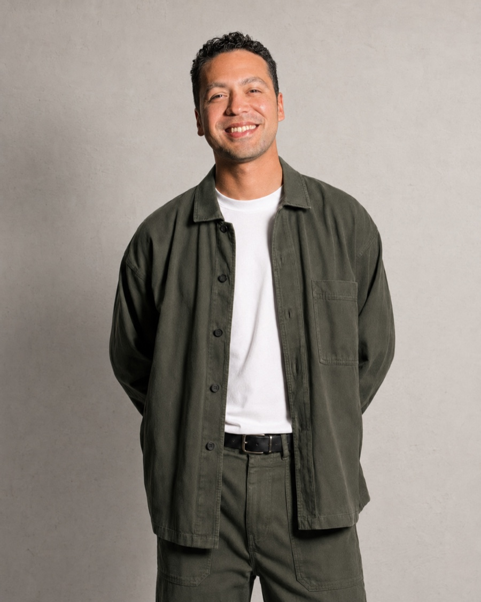

Antes de dibujar una pantalla necesito entender el proceso completo, incluido el que nadie documentó.
Trabajemos juntosCómo llegué hasta aquí
Diseño producto en equipos internos, no en agencia. Convivo con operaciones, con soporte y con desarrollo desde el primer día, y eso cambia lo que llega a la mesa: veo el problema antes de que alguien lo formule como un encargo de diseño.
He trabajado en formación corporativa, en energía y en medios de pago. Sectores distintos con el mismo problema debajo: procesos largos, muchas reglas, y gente que usa el producto porque tiene que hacerlo, no porque le apetezca. Ahí una pantalla mal resuelta no es una molestia, es un coste.



Dónde me sitúo
Trabajo mejor cuando el problema viene enredado y con restricciones que no se negocian: normativa, sistemas heredados, equipos que ya tienen su forma de hacer las cosas. Ordenar lo que nadie ha ordenado todavía es la parte que me interesa.
No llego a rehacer lo que hay porque sí. Primero entiendo por qué está como está, que casi siempre tiene una razón, y desde ahí decido qué se toca. Estoy abierto tanto a entrar en un equipo como a colaborar por proyecto.
Descargar mi CV